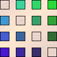
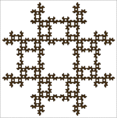

IFS with Memory
Reducing memory from 2-step to 1-step
For each image and the corresponding 1-step memory table, find a 2-step memory table that generates the image.


Click each table for a solution.
Return to
Exercises
.